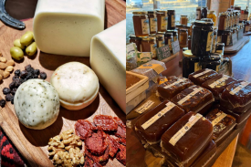
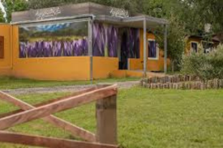
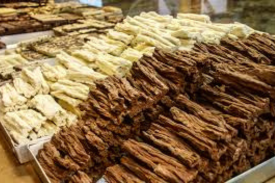

+
Cantón de las Sierras es una fábrica artesanal de productos lácteos ubicada en Villa General Belgrano, Córdoba. El emprendimiento es familiar y se destaca por la elaboración de productos como quesos, yogures y dulces, sin conservantes y aptos para celíacos.

+
Azafrán Mediterráneo es una empresa argentina de producción y comercialización de azafrán, una especia valiosa obtenida de los estigmas de la flor del Crocus sativus. Cultivan y procesan azafrán desde 2007 en Argentina y otros países, obteniendo productos como condimentos, mieles y cosméticos a partir del bulbo y la flor de la planta.
+
Mak Bier es una cervecería y fábrica de cerveza artesanal ubicada en Villa General Belgrano, Córdoba, Argentina, que se destaca por su receta tradicional de familia alemana, ofreciendo una variedad de estilos premiados en un ambiente con temática de Oktoberfest.

+
Capilla Vieja es una chocolateria artesanal ubicada e Villa General Belgrano. Su presencia se destaca en eventos como la fiesta del chocolate, que se lleva a cabo en la localidad año tras año